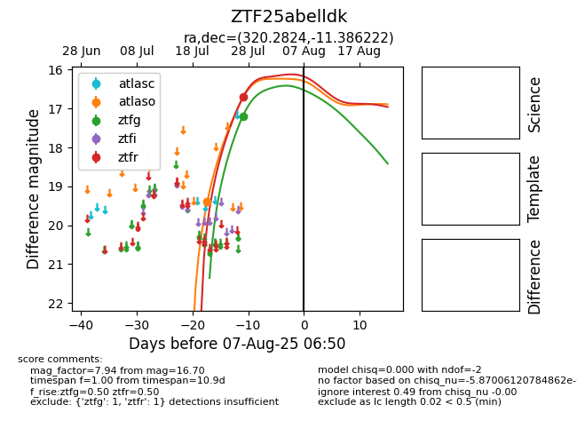

Target ZTF25abelldk at 2025-08-05 23:02, see:
FINK: fink-portal.org/ZTF25abelldk
Lasair: lasair-ztf.lsst.ac.uk/objects/ZTF25abelldk
ALeRCE: alerce.online/object/ZTF25abelldk
alt names
ZTF25abelldk (ztf,fink)
coordinates:
equatorial (ra, dec) = (320.2824,-11.38622)
galactic (l, b) = (39.9572,-38.33192)
photometry
last atlaso=19.40, ztfg=17.19, ztfr=16.70
1 atlaso, 1 ztfg, 1 ztfr detections
